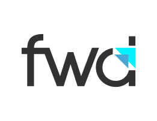
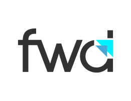

Experience the power of FWD. Request a demo to see how FWD can seamlessly modernize your applications.
 


Extreme automation and runtime compatibility change the economics of switching.
What Benefits does FWD offer?
By replacing the OpenEdge platform with FWD, you get the business benefits of eliminating perpetual Progress license fees. There are also numerous technology benefits that accrue when you deploy your application using FWD, whether you use the ABL or Java as your development language going forward.
What Benefits does FWD offer?
While it is not necessary to switch to Java development to achieve the above benefits, if you do switch some or all future development of your converted application to Java, you have the opportunity to realize additional technology benefits which accrue from the vast investment the software industry has made in the Java language.
Direct-to-WebTM deployment for GUI and ChUI applications
Embed converted UI screens in a web
application
JavaScript interface to converted business logic
Compatible legacy features and
behavior
Portable across software and hardware platforms
Better technology integration options
Deployment-time
choice of databases
Multi-tier architecture
Open source software stack
Instantly web-enable an application without rewriting its UI, using a virtual desktop in a browser.
Instead
of rewriting your user interface to implement a from-scratch web application, selectively re-use converted
screens and business logic from the web.
Converted applications behave as the original: user interface,
data access, transactions, control flow, resource scopes, math and logical operations, etc...
Users
don't need retraining; business processes remain the same.
Built on Java to run on many platforms,
FWD provides a wide range of hardware and software deployment options.
As Java software, the FWD
runtime integrates naturally with thousands of readily available software tools.
Database can be chosen
at deployment time; no application code changes are needed. Support for a new database can be added
incrementally, if it supports FWD's requirements.
Database, server, and clients can run on the same
or separate systems; specialized hardware can be selected to best match each tier's purpose.
Open
source makes licensing and deployment less expensive, debugging simpler, and self-sufficiency possible.

100% automated conversion of entire ABL application into the Java equivalent
Projects of any size are
handled, whether 100 lines or 20 million lines
Runs as a batch in seconds to hours, depending on
project size
NO hand editing required, NO post-processing needed
Compiles immediately (using
javac) after the conversion run completes
Re-run conversion at any time for part or all of a
project
Improvements and refactoring are applied uniformly
Custom conversion rules are simple to
do
Easily integrate with hand-written Java and third party technology
High leverage approach; effort for a conversion project directly depends upon FWD's level of support for
the ABL features in use.
Projects can be done in minutes or hours if the ABL features are supported.
Projects
needing new ABL support will take days, weeks, or months, depending upon the complexity of the features
needed.
Multiple orders of magnitude less work and elapsed time, compared to a rewrite.
Combined
with runtime compatibility, automated conversion minimizes risk.
Easily handles ABL code changes during
the project.
Develop in ABL and deploy in Java.
Switch to Java development when ready.
FWD
conversion and refactoring is continually improving; re-run to pick up changes.
Standardized output.